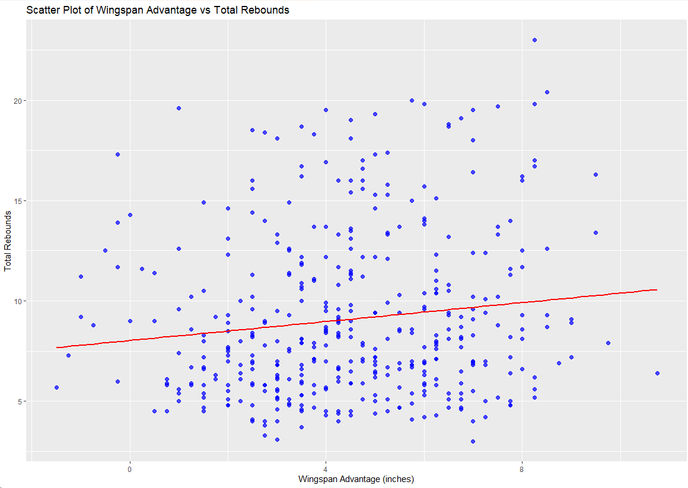
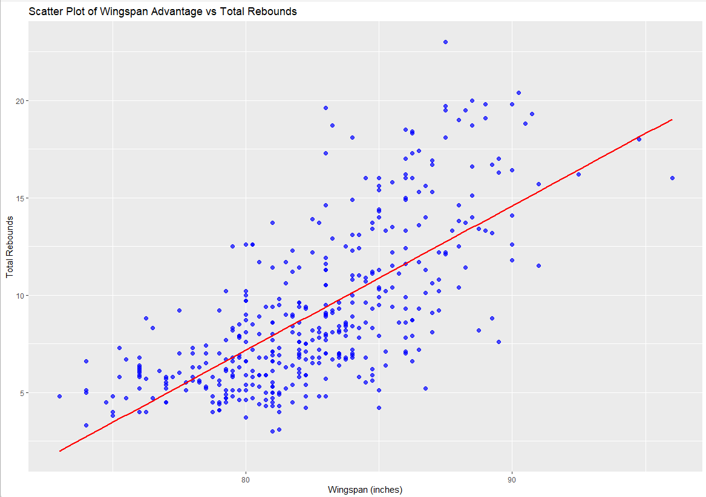
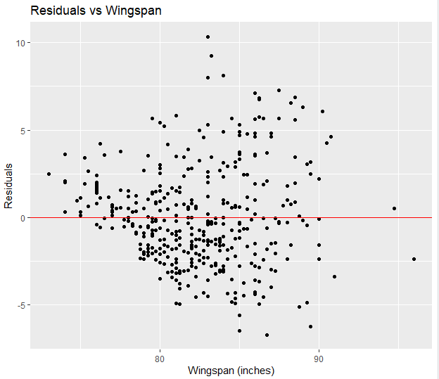
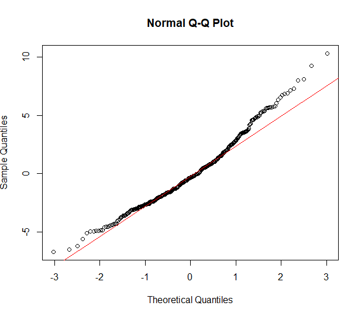

Math 261A Project 1 Draft Report: NBA Player Wingspan vs Total Rebounds
Title: Linear Regression of Total Rebounds vs. Player Wingspan
Author: Jan Blackburn, Math 261A
Date: September 24, 2025
Abstract
Analysis of NBA statistics can be useful in helping evaluate the potential performance of NBA players and their teams. This paper examines the relationship between a players wingspan (measured distance of their arms from fingertip to fingertip) as a predictor of total rebounds. Wingspan has been found to be a key physical attribute of NBA players, contributing to their defensive capabilities as measured by the number of rebounds achieved. This paper evaluated this premise by evaluating data from the [enter data set name] and regressing the number of rebounds obtained in the last 100 ball possessions using a linear regression model. Model results suggest that a linear relationship does appear to exist but that not all critical regression assumptions are strictly met. Based on these findings, further analyses are recommended to enhance the model fit to improve predictive accuracy.
Introduction
Professional Sports in the United States is a big business. This motivates a great deal of analysis by those involved in professional sports including fans, sports analysts and talent scouts to use statistical analysis to improve their understanding of key attributes that contribute to performance. This is especially true in professional basketball where physical attributes such as height can be a key indicator of their ability to perform competitively at a professional level.
In addition to height, wingspan defined as the distance from fingertip to finger on a player with their arms outstretched is frequently used as a key physical attribute that can provide players with advantages in defensive performance as measured by the number of steals, blocked shots and rebounds. Since wingspans are relative to players height, an alternative metric wingspan advantage is used and this is measured as a player’s wingspan - height. For example, a player with wingspan of 80 inches and height of 72 inches will have wingspan advantage of 8 inches. A larger wingspan advantage is considered to be more beneficial to defensive performance.
Data
The data for this study was sourced from NBA Data. This dataset contains player level statistics based on 100 ball possessions (i.e., the last last 100 times the player handled the ball) collected from the 2024-25 National Basketball Association (NBA) season. This data set was compiled from a number of online data sources by the author.
In all, this data set contains 419 rows, representing statistics for each player and 26 columns that include descriptive and numerical data about the players and several key performance statistics. A summary of the variables is included in the Appendix.
Since wingspan advantage is considered a key physical characteristic that can contribute to enhanced performance, we are using this variable as our predictor variable. There are many metrics used to measure defensive performance including, rebounds, steals and blocks. Since steals and blocks occur less often in games relative to rebounds as shown in the exhibit below, therefore, we selected to use rebounds as the response variable in this paper to ensure sufficient variability in the data as shown in the exhibit below.
Exhibit 1: Key Measures and Statistics
| Metric | Min | Q1 | Median | Mean | Q3 | Max |
|---|---|---|---|---|---|---|
| Wingspan Advantage | -1.5 | 3 | 4.5 | 4.46 | 6.13 | 10.75 |
| Rebounds | 3 | 6 | 8 | 9.1 | 11.3 | 23 |
| Blocks | 0 | 0.43 | 0.8 | 1.02 | 1.38 | 5.6 |
| Steals | 0 | 1.2 | 1.6 | 1.7 | 2 | 5.1 |
An evaluation of the data was performed, and we removed a row that contained NA values so the resulting data set contains 418 rows in total.
Methods
Since we are applying a simple linear regression, we analyzed the data to validate key assumptions needed for a valid regression model:
Existence of a linear relationship between trb and wing_span advantage
Residuals have a 0 mean, are independent and have a constant variance
To validate assumptions, we initially generated a scatter plot of trb vs. wingspan_advantage as shown below after importing the data in R:
Exhibit 2: Scatter Plot of Wingspan Advantage vs. Total Rebounds

As can be from Exhibit 2 above, there does not appear to be a clear linear relationship between the response and predictor variables. The fitted linear line suggests that there is slightly positive correlation between the two variables. After evaluation of this exhibit, we simplified the predictor variable by replacing using wingspan advantage with wingspan variable since wingspan advantage may include other confounding influences represented in wingspan and height.
The scatter plot of between wingspan and total rebounds shows a clear linear relationship has illustrated in Exhibit 3 below.
Exhibit 3: Scatter Plot of Wingspan vs. Total Rebounds

Based on the demonstration of a linear relationship between the predictor and response variables and we proceeded with fitting a simple linear regression model to the data using the lm() function in R.
Results
The following linear regression model was fit to the data:
\((trb)_i = \beta_0 + \beta_1 \cdot \text{(wingspan_inches)}_i + \varepsilon_i\)
The results
Exhibit 4: Linear Regression Results
| Parameter | Estimate | Std. Error | t-statistic | p-value |
|---|---|---|---|---|
| Intercept | -52.18849 | 3.14692 | -16.58 | <2e-16 |
| wingspan_inches | 0.74191 | 0.03807 | 19.49 | <2e-16 |
Residuals
| Min | Q1 | Median | Q3 | Max |
|---|---|---|---|---|
| -6.70 | -1.97 | -0.33 | 1.51 | 10.32 |
The F-statistic is 379.9 (1, 416df) with p-value <2e-16 and \(R^2\) = 0.4773.
These regression results suggest that there is relationship between wingspan and total rebounds since all p-values are negligible and R^2 is near 0.5. The coefficient estimate suggests that a one inch increase in wingspan contributes to approximately 0.74 additional rebounds over 100 ball possessions and is consistent with the expected results. The median residuals are near 0 suggesting that a close approximation to 0.
We next looked to validate the assumptions regarding distribution of residuals by creating a scatter plot of the residuals to validate independence and constant variance assumptions. The resulting residual plot is shown below in Exhibit 5. Visual inspection suggests that the residuals increase slightly as wingspan increases, suggesting variance is not constant.
Exhibit 5: Residual Plots

We also tested to see if the residuals were normally distributed by generating a Q-Q plot which is shown in Exhibit 6 below. As can be seen, the data appears to be approximately normal between the -2 to 2 of the theoretical quantiles but diverges from the line at the tails, suggesting slightly heavier tails for the extremes. Overall, however, the residuals appear to be approximately normally distributed.
Exhibit 6: Q-Q Plot

Based on the modeling results have generated the following key takeaways:
Our initial approach to use wingspan_advantage as the predictor variable did not yield an apparent linear relationship. We believe this due the potential confounding impacts of having wingspan and height in the calculation
There does appear to be a linear relationship between wingspan and total rebounds as demonstrated through visual inspection and the results of the linear regression
The resulting linear model suggests that each additional inch of wingspan increases the total number of rebounds by nearly 0.5 and nearly half of the total variance was explained by the model
Residuals appear to be centered near zero but variance is not constant suggesting that specific inferences or predictions with this model may not be entirely accurate
This data set includes additional variables that could be used to further explore and refine our understanding of wingspans impact on rebounding. In pursuit of this goal, we recommend employing a multiple regression model that could include the following variables:
Include categorical variables to account for differences in a player’s position since this could impact rebound level due to differences in defensive roles
Incorporate player’s height as this could help further refine the relationship between wingspan and and rebounds since this could be a confounding variable
Apply the model to offensive vs. defensive rebounds to determine if there is meaningful difference
Further analysis of this relationship could help yield useful insights that could be used by those interested improved predictions for player performance.